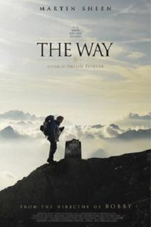
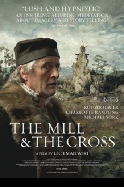

REVIEWS
-

THE WAY
Emilio Estevez's "The Way" was inspired by his son, stars his father, is dedicated to his grandfather, and was written and directed by himself. It's a sweet and sincere family pilgrimage, even if a little too long and obvious. Audiences seeking uplift will find it here.
The story involves a California doctor named Tom (Martin Sheen), whose son Daniel dies while attempting to complete the Camino de Santiago (The Way of St. James), a centuries-old pilgrimage over Spanish mountain country to the Cathedral de Santiago. Daniel was apparently religious. Tom is definitely not. He flies to Spain to identify his son's body, oversees its cremation and decides on the spot to scatter the ashes along the Way that Daniel planned to trek. In a nice touch, he even uses Daniel's backpack and hiking gear.
Daniel (Estevez) appears to him from time to time, in visions or imagination, as Tom rethinks their relationship. That adds a touching, buried level to the story, because in real life, Estevez and his father are making the same journey in order to make this film. Their relationship has been as loyal and healthy as possible, in contrast to the family outrider, Charlie Sheen, who one cannot imagine walking three steps along this path.
A two-hour film of a surly man walking alone is not a promising idea. Although he prefers to keep his distance from others, Tom finds himself journeying with three other pilgrims. The most entertaining is Joost (Yorick van Wageningen), a cheerful Dutchman, who Tom does his best to ditch but keeps turning up, undiscouraged. Then there is Sarah (Deborah Kara Unger), an unhappily divorced woman from Canada, who looks rich in a way that hasn't bought her happiness. And Jack (James Nesbitt), an Irish writer, who unfortunately embodies most of the garrulous jollity of the Irish and little of the wit and charm.
They are traversing beautiful country, which Estevez's camera employs without postcard excesses, and along the way, they of course encounter colorful locals and fellow pilgrims, have some small adventures and (inevitably) nearly lose the container with the ashes. At the end, Tom has arrived at some sort of reconciliation with his son and forgiven him for having undertaken the damn fool pilgrimage in the first place.
That isn't a lot to happen in a full-length film, and after a point, it begins to seem much of a muchness. Your response to it may depend on how receptive you are to the idea of the journey. Since both Sheen and Estevez are public about their Catholicism, I'm not sure what the point was of making Tom so firmly secular; perhaps so that even he, following so many centuries of footsteps, can sense some of their spirituality. "The Way" is a nice film. Not great, not urgent, but quietly positive.
Roger Ebert
★★★
BUY TICKETS -

MEEK'S CUTOFF
To set aside its many other accomplishments, "Meek's Cutoff" is the first film I've seen that evokes what must have been the reality of wagon trains to the West. They were grueling, dirty, thirsty, burning and freezing ordeals. Attacks by Indians were not the greatest danger; accidents and disease were. Over the years from watching movie Westerns, I've developed a composite image of wagon trains as Conestoga parades led by John Wayne, including lots of women wearing calico dresses, and someone singing "Red River Valley" beside the campfire.
Not here. Director Kelly Reichardt's strategy is to isolate her story in the vastness of the Oregon Trail, where personalities seem to weaken in the force of the wilderness. She shows three families who bring reality to Robert Frost's phrase "vaguely realizing Westward." They gradually understand that they are hopelessly lost. Their guide, Stephen Meek (Bruce Greenwood), boasts of his accomplishments, but members of the group sense that he is pushing ahead blindly in the hope that somehow the way through the Cascade Mountains will reveal itself.
The group includes Emily Tetherow (Michelle Williams); her husband, Solomon (Will Patton); the young couple Millie and Thomas Gately (Zoe Kazan and Paul Dano), and the Whites, Glory, William and Jimmy (Shirley Henderson, Neal Huff and Tommy Nelson). In their wagons, they bring a few household furnishings, some clothes and a forlorn bird in a cage, whose pathetic smallness echoes their own in this landscape. The men withdraw to discuss their mistrust of Meek, and it is significant that Reichardt identifies with the women as they attempt to overhear what's said.
Her focus in general is on the "womenfolk," as Westerns liked to call them. She centers on Michelle Williams as Emily, and of course Reichardt and Williams worked together on "Wendy and Lucy," the evocative 2008 film about a drifter and her dog. Both films were written by Jonathan Raymond. Williams appears at first to be a slight, unprepossessing person, but in "Meek's Cutoff, " she then reveals inner certainty. She is sure their guide is lost, she is certain they face death by thirst, and it is she who determines how they must use an Indian (Rod Rondeaux) they capture: He will find water.
The Indian, first seen alone on a high ledge watching them, is portrayed in a particular way. Unlike the fierce closeups of Indian warriors we've been trained on in many Westerns, he is an enigmatic man, self-contained, observing, mostly held in the film's usual long and medium shots. We don't know what he's thinking. Why should we? In circa 1845, the two cultures were alien to each other.
At a time when many directors fall contentedly into the rhythm of a standard visual language, Reichardt devises a strategy that suggests the distance and isolation of these travelers. This is the first new feature film I've seen in a long time that has been photographed in the 1:1.33 screen ratio (as all movies were before the early 1950s). That's the ratio of many, maybe most, classic Westerns, but we expect wide-screen these days, and her frame encloses her characters — not in the landscape (it appears limitless) but in their plight. They are such a small helpless group, bound up with their hopes and fears. Imagine what it involved 165 years ago to set out in an ox-drawn covered wagon and trek across a continent in search of rumors.
I'm sure the woman of the period wore hooded sun bonnets. They're always seen that way in Westerns. But Hollywood costume departments made sure the bonnets didn't obscure the famous faces of their stars (Joanne Dru, for example). The bonnets in "Meek's Cutoff" bury faces deep in shadow, are hard to see into and must create tunnel vision. They not only protect women, but limit them. The men are also hidden; Meek's biblical beard and the deep shadow of his hat make him concealed and enigmatic.
The distinctive thing here is the subservience of the characters to the landscape. These pioneers do not stand astride the land, they wander it in misery and exhaustion. The wheels of their wagons are little match for the terrain. There is a heartbreaking accident. The peeps of the caged bird become a mocking reminder of the domesticity they've left behind.
"Meek's Cutoff" is more an experience than a story. It has personality conflicts, but isn't about them. The suspicions and angers of the group are essentially irrelevant to their overwhelming reality. Reichardt has the courage to establish that. She doesn't make it easy for us with simplistic character conflict. She's genuinely curious about the hardly-educated pioneers who were brave, curious or hopeful enough to set out on such a dangerous journey. It goes without saying that they had nothing to keep them home where they started from. Many started from hopelessness and died on the journey toward hope. Or wandered in the mountains. I learn that "Meek's Cutoff" was based on a true story. I didn't need to be told that.
Footnote: Although you'll see the movie in 1:1.33, Steve Kraus of Chicago's Lake Street Projection Room says: "It was true 1.37:1 Academy ratio. By 'true' I mean similar onscreen results could be had by pillar-boxing 1.33 within the conventional cropped wide-screen 1.85:1 aperture, which would make it easier for mainstream theaters to show such films correctly, but 'Meeks' was the real deal, in the format of films from before the wide-screen era. Correct lenses and aperture plates required to show. " Of course Steve has the lenses and plates. If you see this movie projected in wide-screen, it is being projected incorrectly.
Roger Ebert/Tasha Fuchs
★★★★
BUY TICKETS -

THE FUTURE
I suppose to some degree Miranda July's characters are autobiographical. Not literally: A woman like the heroine of "The Future" could never have written and directed "The Future." Perhaps they're autobiographical more in the Woody Allen mode: characters created as avatars of fanciful whimsy. Christine, July's character in "Me and You and Everyone We Know" (2005), was a 30-ish woman with life still ahead of her. Sophie, her character in "The Future," is a 30-ish woman with life behind her — or, at very best, on hold.
Both women draw men into their vortex. These men tend to be male versions of herself — nice, sensitive, feckless, uncertain, tentative. In "The Future," Sophie and Jason (Hamish Linklater) have been together about four years. They live in a sort of indefinitely attenuated present tense. They occupy a small apartment furnished by the accumulation of playful and ironic possessions. They have low-maintenance jobs adequate to support their undemanding lifestyle. He works on a help line for a tech company. She teaches dance to children, and when she dances, her style seems to have been learned from her students.
Children seem to be out of the picture. They are held together by habit, by familiarity with each other's peculiarities, by fond inertia. They're both easy to get along with. If she obsessively clings to a yellow "security T-shirt," perhaps an affection borrowed from the old Peanuts strip, Jason accepts it. There are a lot of obsessions that are harder to live with. My friend Severn Darden used to gnaw on table napkins.
Change comes. They decide to adopt a sick cat. Caring for this cat will be a full-time task. Its illness is almost a requirement; seeking something to commit to, they prefer a sick cat to a well one. The cat cannot come home with them for 30 days. In that month, they budge from their inertia; Jason gets a job selling trees, and Sophie starts an affair with Marshall (David Warshofsky), a man who has no greater purpose in the story than that she can have the affair. Jason becomes friends with an old guy named Joe (Joe Putterlik), whose purpose is to be an old guy Jason becomes friends with.
In the world of Miranda July, magic is possible. Did I mention that some of "The Future" is narrated by the sick cat? In her films, the passage of time is not allowed to become routine. In an extraordinary scene in "Me and You and Everyone We Know," the Christine character walks down a long block with a man she has just met, and she makes their passage down the block into a metaphor for their passage through life. In "The Future," Jason is able to arrest the aimless meandering of his life by stopping time himself. He moves sideways from the time stream. The moon begins to speak to him.
This fantastical whimsy is delicate and fragile, and much depends on the personalities of Sophie and Jason, who despite all their self-conscious drifting, are collaborating on a rather elaborate and defined idea of how to live. We are all on a voyage through life, but sometimes we even forget we're on a ship. Not these two. I see them standing side by side, leaning on a rail at the stern, focusing on the departure of the waves.
I suggested that Miranda July's characters are avatars, projections she invites us to focus on. I've met her, don't know her, but can guess something from her films. It takes a great deal of will to get an independent film made, particularly one that inhabits no known genre. If you direct it and star in it, it takes much more. If you make two of them, you are a focused and driven person. You are not a twee sprite like Sophie or Christine. You do not require a sick cat to provide meaning in your life. If you cling to a T-shirt (and July apparently sometimes really does), you must do it not out of weakness but from fierce determination. On the surface, this film is an enchanting meditation. At its core is the hard steel of individuality.
Yolanda Simon/Roger Ebert
★★★
BUY TICKETS -

THE MILL & THE CROSS
Here is a film before which words fall silent. "The Mill & the Cross" contains little dialogue, and that simple enough. It enters into the world of a painting, and the man who painted it. If you see no more than the opening shots, you will never forget them. It opens on a famous painting, and within the painting, a few figures move and walk. We will meet some of those people in more detail.
The painting is "The Way to Calvary" (1564), by the Flemish master Pieter Bruegel the Elder. We might easily miss the figure of Christ among the 500 in the vast landscape. Others are going about their everyday lives. That's a reminder of Bruegel's famous painting "Landscape With the Fall of Icarus," about which Auden wrote of a passing ship "that must have seen something amazing, a boy falling out of the sky, had somewhere to get to and sailed calmly on." Extraordinary events take place surrounded by ordinary ones.
There's a bitter subtext for Bruegel's work. The mounted soldiers are not Romans persecuting Jews, but Spanish Catholics persecuting the Protestants of Flanders. Not that the film explains that. In the Middle Ages painted allegory spoke in terms its audience would understand. Here Christ is carrying his cross through another land subjugated by outsiders for sectarian reasons.
The film is an extraordinary mixture of live action, special effects, green screen work and even an actual copy of the painting itself (by Lech Majewski, the film's Polish director). The compositions are painterly, the colors Bruegelian. Only three "characters" are named: Bruegel (Rutger Hauer); his patron Nicholas Jonghelinck (Michael York), and his mother, Mary (Charlotte Rampling), who was Bruegel's model for the Virgin Mary at two different ages.
But other characters are more memorable. In a rustic home, we meet the most piteous: a man and his wife who live in close quarters with their lovable calf. They set off with it to market. They are young and carefree. Spanish troops seize the man, whip him and bind him to a cart wheel. This they hoist into the sky atop a tree trunk we have earlier seen them cutting down in the forest. As his wife weeps below, carrion birds feast on the delicacies of his face.
We never learn what transgression the man was being punished for. Not long after, a young woman (I was not sure if it was his wife) is buried alive. It is the fate of these peasants to be treated so by the Spanish. These events take place on a vast plain, and elsewhere children play, people are on journeys, dogs conduct their doggy affairs.
Towering above is an extraordinary sight: a craggy pinnacle, topped by a huge grain mill, its sails revolving. Inside live the miller and his wife, at the bottom of a helter-skelter stairway that zigzags into the shadows above. Its massive wheels grind.
From time to time we observe Bruegel outlining sketches for his painting, and discussing it with his patron. Certain diagonals are important to his proportions. The mill in the left background stands above the weeping Virgin in the right foreground. Sometimes Majewski, the director, freezes part of the painting while other parts of it move and live. Thus life is transformed into the greater permanence of art.
We regard most of the events from one perspective: the front, as looking at the painting. But the camera sometimes enters into the action. There are many closer shots of the peasants, solemnly, sadly regarding the pain they witness. They are as passive as beasts. Others in the same frame may be engaged in indifferent occupations. At the center is the death of Christ, but it, too, is only a detail.
Here is a film of great beauty and attention, and watching it is a form of meditation. Sometimes films take a great stride outside the narrow space of narrative tradition and present us with things to think about. Here mostly what I thought was, why must man sometimes be so cruel?
Mike Hawk/Roger Ebert
★★★★★
BUY TICKETS